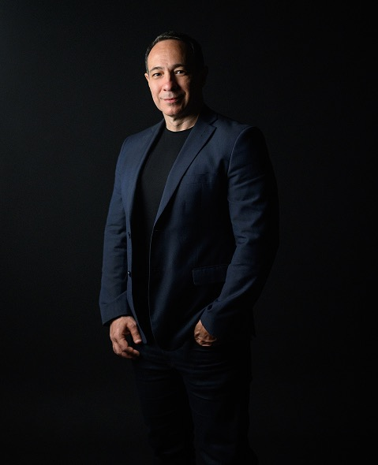

Em 12 meses, você estrutura posicionamento, ofertas, método, marca e processo comercial com acompanhamento até a fase de prospecção, negociação e busca pelos primeiros contratos.
Ter conhecimento suficiente para ajudar empresas ou pessoas não significa, por si só, saber transformar essa experiência em algo que o mercado consiga entender e contratar. É comum dominar o próprio assunto e ainda ter dúvidas sobre nicho, oferta, preço, método, apresentação comercial ou prospecção.
Veja como o Axon organiza essa construção e acompanha o profissional até a fase em que o negócio começa a ser colocado diante de potenciais clientes.

Você acumulou conhecimento e repertório, mas ainda não definiu com clareza o que vender, para quem e em qual formato.
Você já atende, mas cada trabalho exige criar métodos, materiais, proposta e processo comercial quase do zero.
Você quer transformar anos de carreira em consultoria, treinamento ou mentoria sem precisar sair do emprego primeiro para depois descobrir como esse negócio funciona.
Os clientes existem, mas boa parte das oportunidades ainda depende de indicação, projetos muito personalizados e uma rotina comercial pouco previsível.
Nessa fase, o repertório profissional já existe. O desafio passa a ser organizá-lo em algo que possa ser apresentado, vendido e entregue com consistência.
O Axon combina capacitação, mentoria individual e coletiva e consultoria aplicada durante 12 meses. O trabalho parte da experiência que você já construiu e organiza oito frentes do negócio.
Você define onde sua experiência tem mais aderência, quais clientes vale priorizar e quais problemas pretende atender.
A análise considera mercado, concorrência, preços, tendências e espaços em que sua experiência pode ter aplicação.
Consultoria, treinamento ou mentoria ganham escopo, formato e lógica comercial.
A experiência acumulada ao longo da carreira é organizada em fases, critérios, diagnóstico, acompanhamento e uma forma própria de trabalhar.
Diagnósticos, formulários, matrizes, frameworks e relatórios começam a fazer parte da execução com clientes.
Você trabalha uma proposta de valor, diferenciação, identidade verbal, identidade visual e a forma de apresentar sua atuação.
Entram prospecção, indicação, conteúdo, funil, argumentação e materiais comerciais.
A estrutura comercial inclui propostas, contratos, termos, briefings e documentos aplicáveis ao negócio.
Nicho definido · 3 a 5 ofertas · método próprio · marca · ferramentas · propostas e contratos · processo comercial · estrutura para buscar os primeiros contratos
Método, marca e materiais comerciais ajudam. Depois vem a parte em que sua oferta precisa chegar a pessoas e empresas que podem contratar o trabalho.
O Axon acompanha essa fase com:
Organização das ações para colocar suas ofertas diante de potenciais clientes.
Você chega à conversa sabendo o que investigar, como apresentar o trabalho e quais pontos precisam ser esclarecidos.
Apoio na condução das oportunidades e na estruturação da proposta comercial.
Orientação durante o avanço da negociação até o contrato.
Acompanhamento para começar a aplicar método e ferramentas em uma entrega real.
Não necessariamente. O programa também contempla especialistas, gestores e executivos que possuem experiência e querem transformá-la em consultoria, treinamento ou mentoria.
Sim. Executivos e gestores em transição fazem parte dos perfis previstos.
A definição e priorização do público e do nicho fazem parte da etapa de fundação.
Não há audiência mínima prevista. O processo comercial pode envolver prospecção, indicação, conteúdo e outros canais adequados ao negócio.
Sim. Existe uma etapa de ativação comercial com prospecção, preparação de reuniões, negociação, propostas e apoio na primeira entrega. Esse acompanhamento não representa garantia de contratação.
Não. O público também inclui profissionais de gestão, saúde, finanças, TI, desenvolvimento humano, estratégia, liderança e outras especialidades.
A construção de uma metodologia própria faz parte dos oito ativos do programa.
Sim. O Axon prevê mentoria individual e coletiva.
O programa possui 12 meses de acompanhamento.
Não. O programa também contempla profissionais que estão estruturando uma transição.
Conte um pouco sobre o seu momento profissional. As respostas ajudam o time Axon a entender em que estágio você está e se o programa faz sentido para o que pretende construir.